Оба варианта собраны по брифу: современный, технологичный, промышленный и солидный сайт, с опорой на брендбук и преемственностью с текущим сайтом. Цвета и шрифт в обоих фирменные. Варианты различаются подачей: светлой и спокойной или тёмной и инженерной. Клик по экрану открывает его целиком.
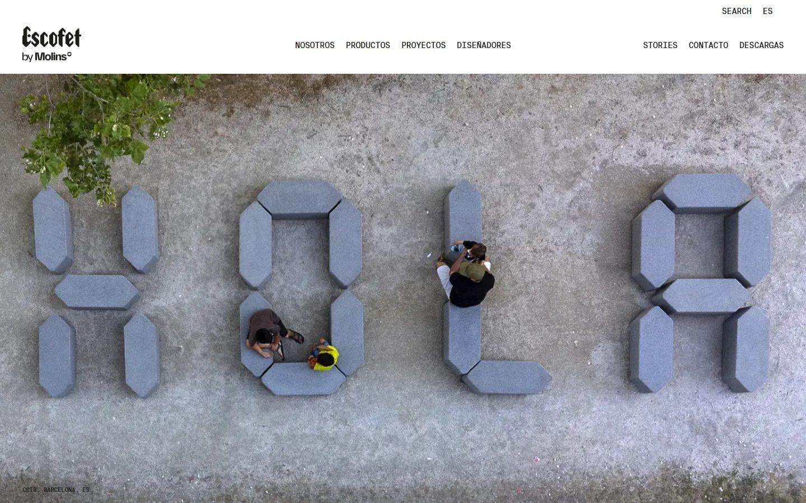
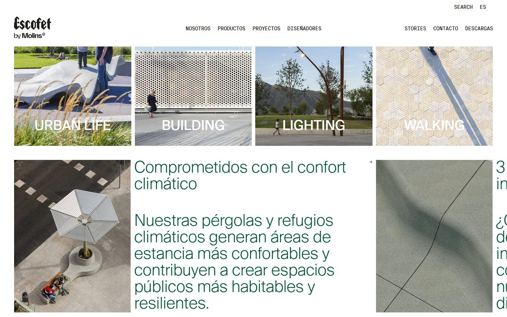
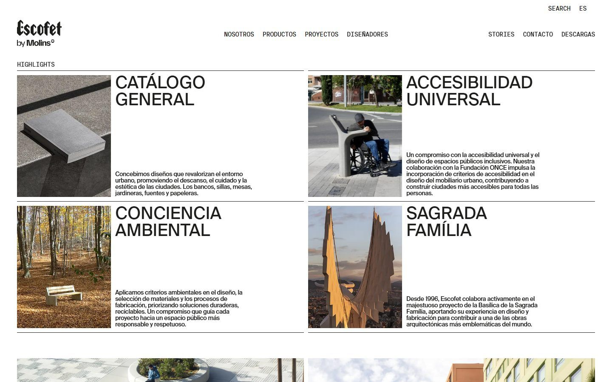
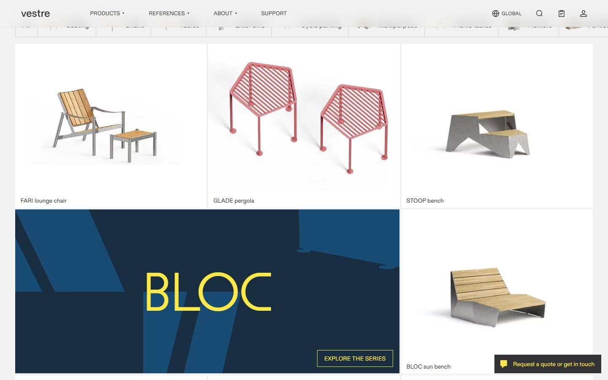
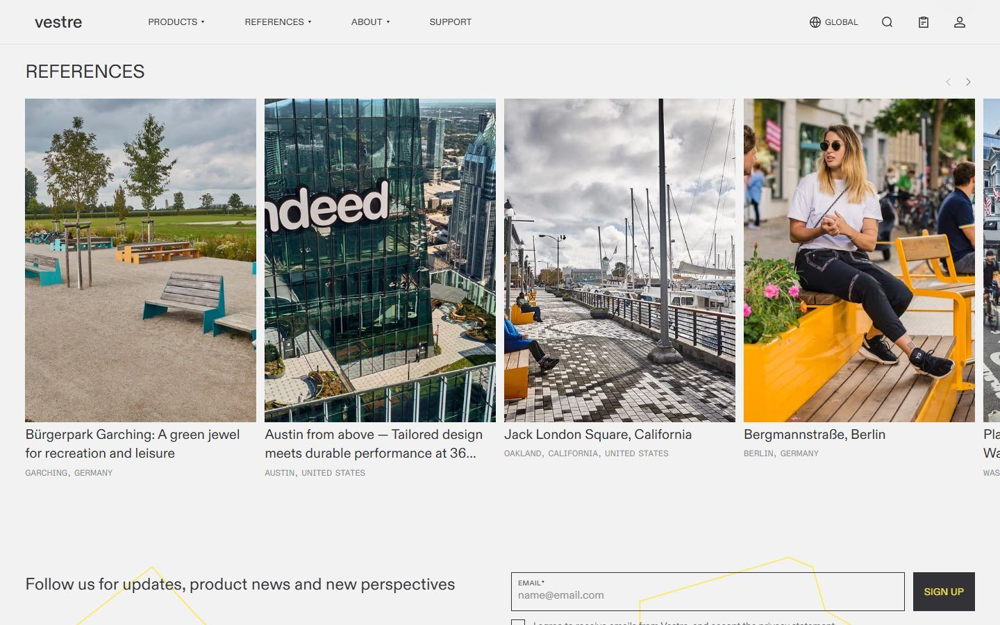
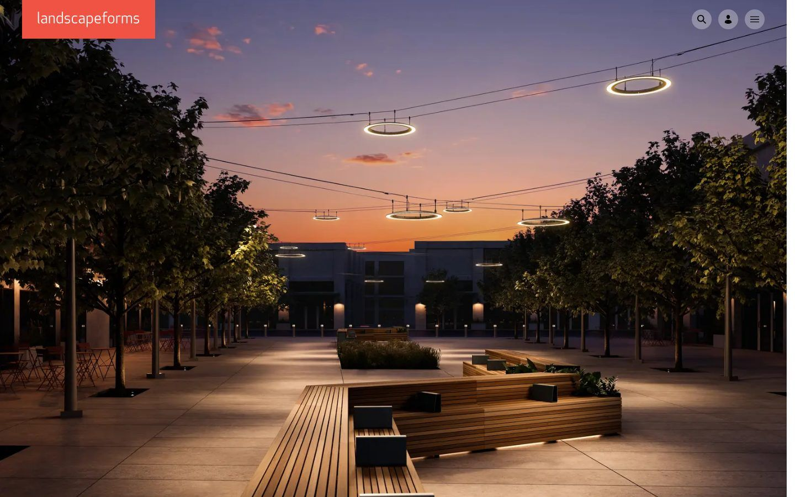
Светлый фон, крупные фото конструкций в городской среде, каталог плитками. Фирменный синий для текста и плашек, красный точечно на кнопках. Отвечает критерию из брифа «нет ощущения перегруженности».
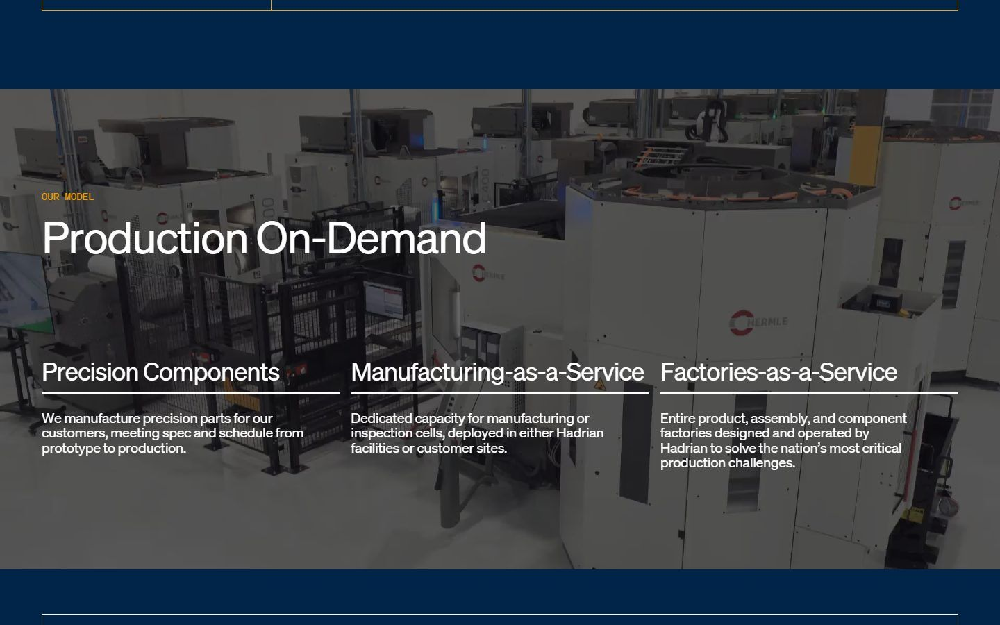
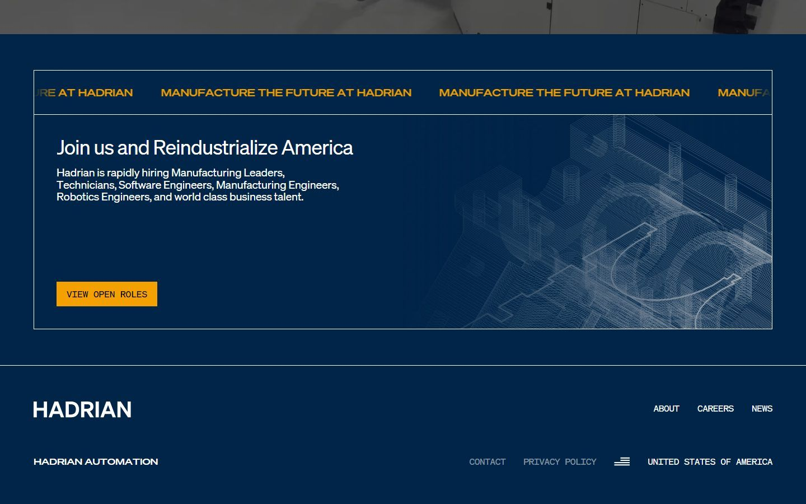
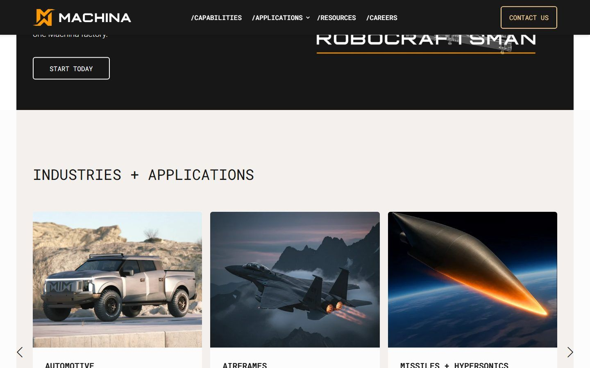
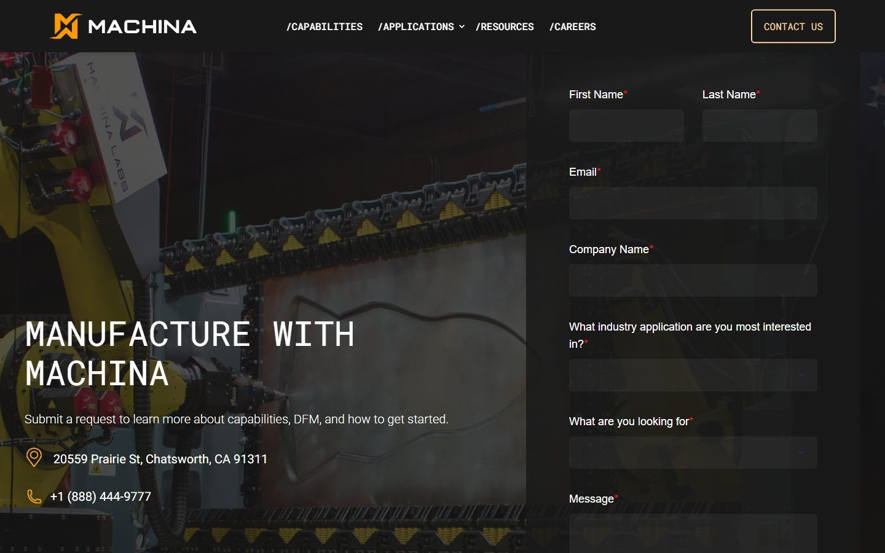
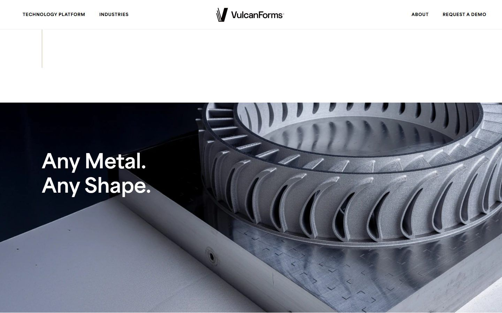
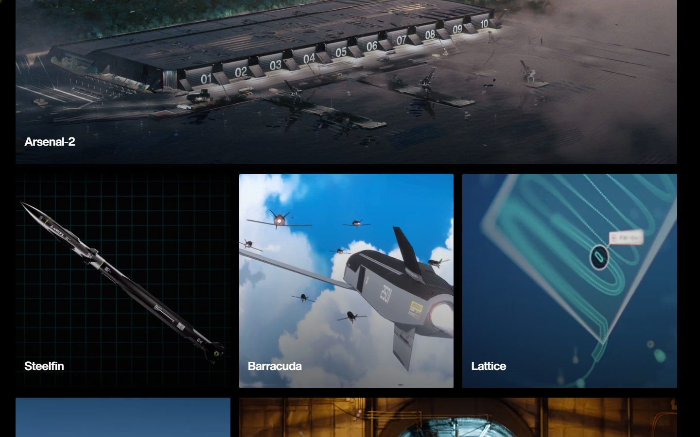
Фирменный тёмно-синий как основной фон, тонкие технические линии и чертёжная графика, подписи характеристик моноширинным шрифтом, фото производства и станков. Работает на акценты брифа: собственное производство, свои мощности, нестандартные конструкции.